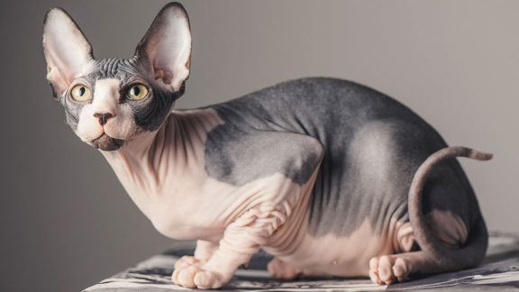
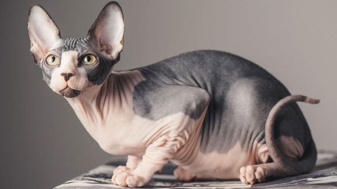

| персидская кошка | британская кошка | сфинкс |
|---|---|---|
| Персы очень игривые | Британские кошки отличаются сдержанностью и интеллигентным характером | Чаще всего рождаются сфинксы с шерстью. Потом шерсть у сфинксов исчезает |
| Они не мяукают | Представители этой породы живут в среднем два десятка лет | Сфинксы — единственные коты, которые могут улыбаться |
| Кошки этой породы положительно реагируют на комплименты | Британская кошка окраса тэбби является лицом бренда Whiskas | Все сфинксы обладают огромными ушами от 5-7 см |
| Любят поспать | Коты породы британская короткошерстная — отличные охотники | Голого кота нужно чаще купать, так как на коже образуется жир |